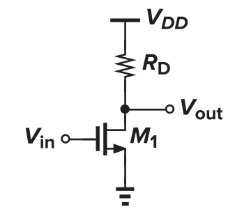
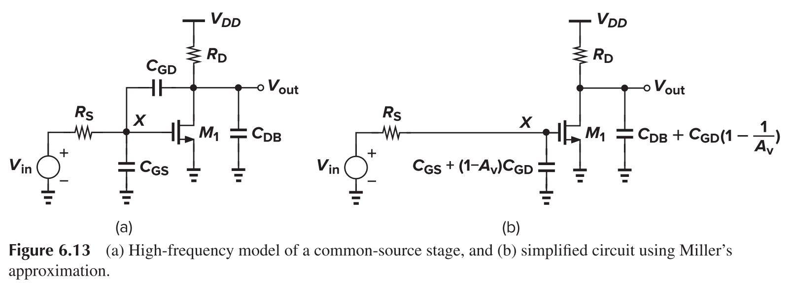
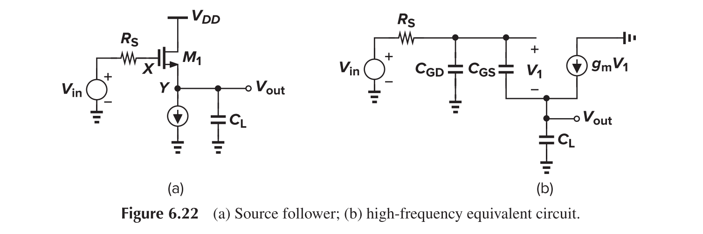
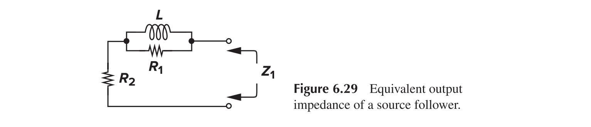
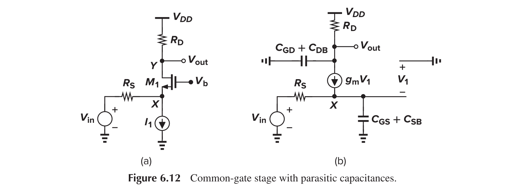

MOS Amplifier Structures
This article details the structures of basic mos amplifiers.
Common Source
CS with Resistor Load

In saturation mode, the voltage gain is
In triode mode, the voltage gain is
which reaches maximal when $V_{out}=V_{in}-V_{TH}$.
CS with Diode Load (Cascode)
A diode can be realized by connecting the gate and drain of a transistor

In that case, the equivalent output resistance is
From a large-signal perspective, a diode act like a "square root" operator.

The voltage gain of a CS stage with diode load is
where $\eta=g_{mb2}/g_{m2}$
The working state of this configuration is
- $V_{in}<V_{TH1}, V_{out}\approx V_{dd}-V_{TH2}$, M1 off, M2 near cut-off
- $V_{TH1}<V_{in}<V_{out}+V_{TH1}$, M1 saturation, M2 saturation, linear
- $V_{out}+V_{TH1}<V_{in}$, M1 diode, M2 saturation
Strong input device and weak load device can lead to high gain, yet the voltage swing is severely limited.
CS with Current-Source Load
Assume that M2 is operating in saturation region.

The voltage gain is
CS with Active Load

The voltage gain is
This topology is sensitive to PVT variation due to $V_{GS1}+V_{GS2}=V_{DD}$. Still, it would amplify supply noise, the gain is
CS with Triode Load
Assume that M2 is operating in deep triode region and behaves as a resistor ($V_b$ is very close to $V_{DD}$).

The voltage gain is
This circuit is difficult to provide bias with consideration to PVT variation. However, as compared to diode counterpart, it has no output voltage headroom (i.e. $V_{out,max}=V_{DD}$)
CS with Source Degeneration
Like diode load, source degeneration can be employed to enhance the linearity.

This can be explained as "the resistance seen at the drain" divided by "the total resistance in the source path".

- When $V_{in}$ is low, $1/g_m\gg R_s, G_m\approx g_m$
- For large $V_{in}$, $1/g_m\ll R_s, G_m\approx 1/R_s$

As depicted from the figure, the large signal gain is relatively smooth with source degeneration.
The output impedance is

The gain can be written as

Source Follower

Source follower can act like a buffer. It offers high input resistance and low output resistance.
With a current source rather than a resistor as load, the linearity can be improved because $V_{GS}$ will be fixed for a fixed $I_d$.

Common Gate


A more detailed calculation of Av reveals

For a more detailed calculation of Rin

The MOS can transform impedance up from source to drain, or down from drain to source.

Cascode
For both MOS to be in saturation
The large signal operating mode is as follows:
- For $V_{in}<V_{TH1}$, M1 off, M2 off, $V_{out}=V_{DD}$
- For $V_{in}>V_{TH1}$, M1 saturation, M2 saturation
- For sufficiently large $V_{in}$, two occasions can occur
- M1 enter triode region first
- M2 enter triode region first
Neglecting channel length modulation effect, Cascode amplifier has gain of
Cascode can reduce mismatch because

In the first case
Instead, in the second case
Folded Cascode is as follows:

- Higher DC consumption for comparable performance
Miller Effect

The current flowing from X to Y is
Therefore
Similarly
Attention:
- Only actual $A_v$ at the frequency of interest may be used to accurately predict the input impedance, but low-frequency $A_v$ is useful for approximation (it may eliminate zeros and predict additional poles).
- Since the reverse gain is not necessarily $1/A_v$ (as in the case of CG), it cannot be used to calculate the output impedance directly. Instead, a voltage source should be connected at the output node to test the reverse gain, and that result be used to calculate the impedance.
- Trans-impedance Z must present in the process of calculating $A_v$.
Frequency Response
Association of Poles with Nodes
We can associate each pole with one node of the circuit. It is not always true, but affords an intuitive approach to the estimation of the transfer function.
General Formula
Common Source

Poles can be estimated as
and the gain is
A direct analysis shows
The denominator can be written as
Further assume that $1/\omega_{p2}\ll1/\omega_{p1}$, we have
A zero exists as
Signal cancellation model is as follows:

Source Follower

Strong interaction through $C_{GS}$ makes it difficult to associate a pole with each node in the circuit. Calculation shows
Therefore
Note if $C_L=0$, the previous formula reduces to
In this case, only one pole at the input presents. We say $C_{GS}$ is bootstrapped by the source follower.
Neglecting channel length modulation, the input impedance is
It presents negative real input impedance at high frequency, thus is possibly unstable.
Output impedance is

Figure (c) is more common, as when operated as buffer, $Z_{out}<Z_{in}$. It can be modelled as

Thus, source follower can be used to realize inductors.
Common Gate

We have
It has no Miller multiplication of capacitances, thus have wider bandwidth.
Cascode

The pole associated with node A is
The pole associated with node X is
The pole associated with node Y is
Extra Element Theorem

Zero Value Time Constant Method
The dominant pole of a circuit equals to the sum of all zero value time constants, each of which is obtained by setting input voltage and other capacitance to zero and computing the product of the capacitance of interest and its corresponding equivalent resistance.
Proof
The dominant pole is the coefficient of $s$ in the denominator.
Denominator can be written as
Therefore, the coefficient of $s$ is $\omega_{p1}^{-1}+\omega_{p2}^{-1}+...+\omega_{pn}^{-1}$, which reduce to $\omega_{p1}^{-1}$ with dominant pole assumption.
The coefficient of $s$ in the denominator equals to the sum of all zero-value time constants.
Since the coefficient of $s$ has a time dimension, we can write it as $B_s=R_1C_1+R_2C_2+...+R_nC_n$, where $C_1-C_n$ denote real capacitors, and $R_1-R_n$ are unknown. With $C_2-C_n$ set to 0, the order of the system reduces to 1, and therefore $R_1$ is the resistance seen by $C_1$.
Reference
- Behzad Razavi. Design of analog CMOS integrated circuits.
- Post link: https://triblemany.github.io/archives/2e70db9d/transistor-amplifier.html
- Copyright Notice: All articles in this blog are licensed under BY-NC-SA unless stating additionally.